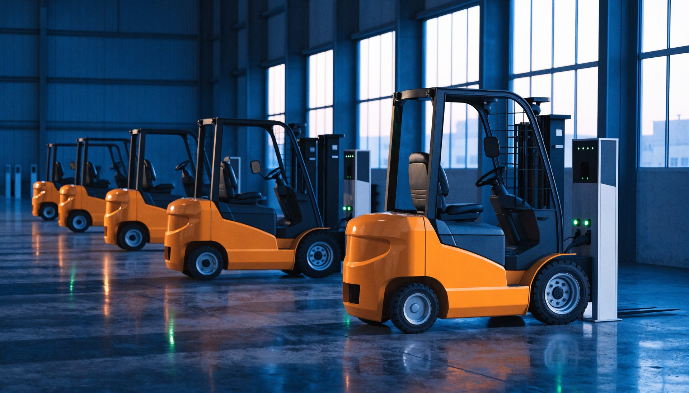

Ahora mismo
06:00 · Bodega

 Hyster · eléctricas
Hyster · eléctricas
Las eléctricas salen del cargador
Grúas horquilla eléctricas Hyster de contrapeso, de 3 y 4 ruedas, las más productivas y eficientes energéticamente del mercado para uso interior. 1.360 a 1.814 kg. Transpaletas eléctricas de 2.000 a 3.628 kg para carga y descarga.
Hyster · eléctricas